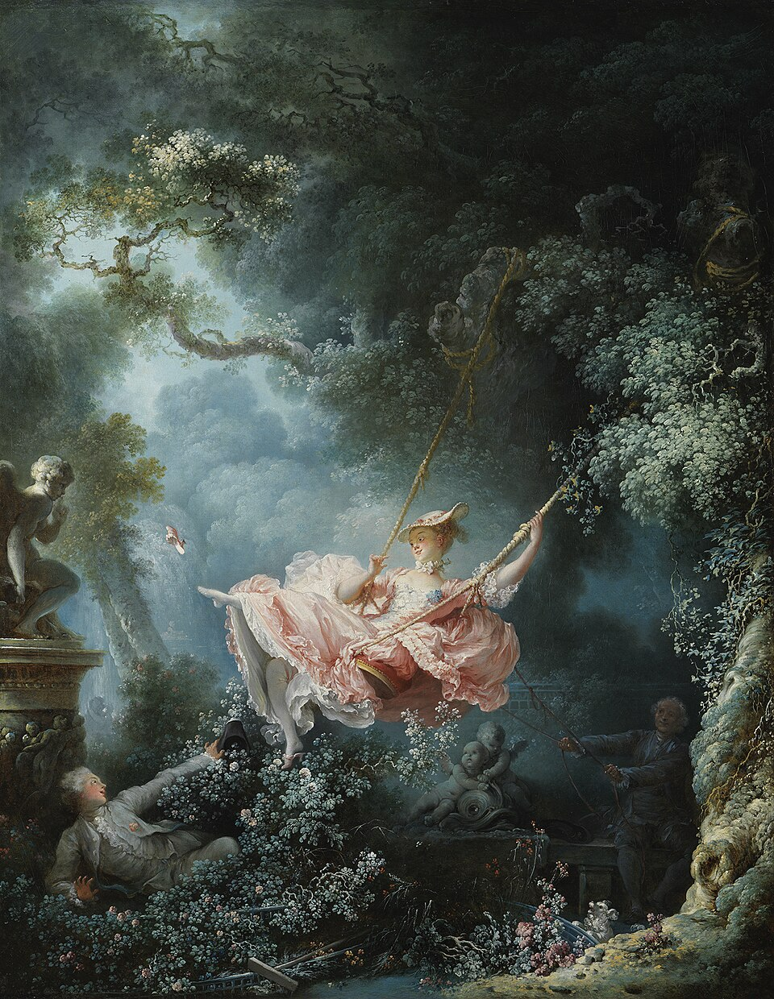

A small introduction
Ava
Birt
A student of spaces, stories, and the beautiful details that make a home feel considered.

01 — About
Designing a life
with intention.
I’m a junior at the University of Wisconsin–Madison, studying Design, Innovation, and Society with a technology pathway. Alongside my undergraduate studies, I’m pursuing an interior design certificate through another school.
I’m drawn to interiors for the way they can quietly tell a story. My goal is to build a career in interior design, and one day, create a company of my own.
02 — Off the clock
Reality television
Organizing
Thrifting
Finding charm in the unexpected, one well-loved piece at a time.